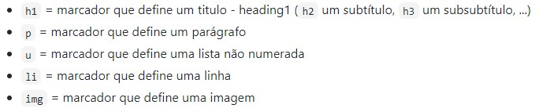

Durante a aula de laboratorio Aula 1 aprendemos os basicos para a criação e alojamento de uma página web.
Com a ajuda de um modelo de uma página escrita em HTML disponibilizado pelos docentes.
Já com algumas marcações para uma primeira interacção mais simples e "Straight Foward" dos alunos.
As marcações dadas por parte dos docentes:
Para que seja possível alojar a página foi necessário então criar conta numa plataforma que providencia alojamento em cloud gratuitamente ( Heroku ).
Uma vez criada a conta, foi então efectuado o link entre esta mesma plataforma e o GitHub, local que vai alojar todos os ficheiros e imagens.
Após as configurações feitas podemos então por a nossa página online (Link acima identificado como Aula 1).
Um IP, ou endereço de ip, é um identificador que nos permite fazer trocas de informação entre dispositivos dentro da rede. Todos os endereços de ip contêm informação de onde se localizam
Na imagen seguinte mostro o IP do meu portátil.